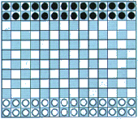
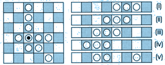
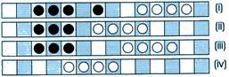
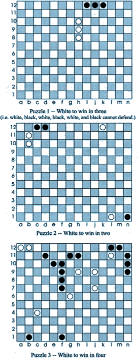

Abstract Games Issue 3 Autumn 2000
|
 |
Epaminondas
... a game of classical elegance
by Kerry Handscomb |
|
|
Epaminondas is named after the Theban general who invented the phalanx, a formation he used to defeat the Spartans in 371 B.C. The term "phalanx" is used in the game to describe a certain arrangement of pieces that can move and capture as a single unit. The game was invented by Robert Abbott and published by him privately in 1975. It was also released in England around the same time by Philmar Ltd. of London. Epaminondas is an expanded and improved version of Crossings, a game published in Sid Sackson's A Gamut of Games.
Although Epaminondas was described in Wayne Schmittberger's book, New Rules for Classic Games (John Wiley & Sons, 1992) and praised highly by David Parlett in his book, The Oxford History of Board Games (OUP, 1999), few people play it these days. This is a pity, because it is a superb game.
Robert Abbott used Epaminondas to illustrate his concept of clarity. The clarity of a game is the practical measure of its depth, as defined to be how far you can see ahead in the game. Epaminondas is a model of clarity. To quote Robert Abbott from his article in Games & Puzzles, May 1975, "Epaminondas is clear because the magnitude and direction of the forces are shown by the size and direction of the phalanxes. Thus the patterns that develop during the game graphically display the confrontation of power."
In addition to clarity, Epaminondas has simplicity and elegance. Robert Abbott writes in the rules of the Philmar edition, "The equipment is fairly simple, and you should also find the rules to be simple; yet these elements combine to allow for strategies of surprising depth. And the changing patterns that develop during a game often exhibit a certain beauty."
So why did this beautiful game not achieve greater popularity? One factor that cannot be entirely discounted is that the name is too awkward to remember and pronounce. Robert Abbott himself says that the only thing he would do differently about the game if it were published again today would be to change the name.
Overview
Epaminondas is played on a 14 x 12 board with 28 black pieces and 28 white pieces. A checkered board is helpful for visualizing diagonals. The pieces are flat, like checkers. The board is set up in the starting position shown in the top left corner of this page. Black and white take turns to move. White moves first. Broadly speaking, white moves his pieces up the board to occupy black's back rank, and black moves his pieces down the board to occupy white's back rank.
An interesting point about Epaminondas is that its game system could be applied to almost any size of board; in fact the parent game, Crossings, uses an 8x8 board. According to Robert Abbott, however, the 14x12 size is optimal: increasing the depth of the board to 12 rows gives far greater scope for strategic development, while making the board a little wider than it is deep adds variety by increasing the importance of diagonal play.
Phalanxes
A phalanx is defined as a connected group of two or more pieces in a straight line, either orthogonally or diagonally. A piece may belong to several phalanxes in different directions.

Figure 1 -- Phalanxes Figure 2 -- Movement
The white piece with the black mark in Figure 1 belongs to a vertical five-piece phalanx, a horizontal four-piece phalanx, and a diagonal three-piece phalanx.
Movement
Each turn a player must either move a single piece one square in any direction to an empty square or move a phalanx. It is not permitted to pass.
When a phalanx moves, all the pieces in the phalanx move an equal number of squares in the same direction in a straight line. The direction of movement must be either forward or backward along the line of orientation of the phalanx. The number of squares moved by each piece must be equal to or less than the total number of pieces in the phalanx. In Figure 2, for example, the three-piece phalanx which starts in position (i) may move one, two, or three squares to the positions in (ii), (iii), or (iv), respectively. If the board extended far enough to the right, the phalanx could move in that direction, too. (For reasons of space, the only example given is of a horizontal phalanx, but the same rules equally apply to vertical and diagonal phalanxes.)
A phalanx can be split up to move. In this case, the number of squares it can move is equal to or less than the total number of pieces in the moving phalanx. Figure 2 (v) shows the position after a two-piece phalanx has split off from the three-piece phalanx of (i) and moved two squares. It could not move further.
A phalanx cannot move off the board or onto or over a square occupied by a friendly piece. Under certain conditions, when capturing, the lead piece of a moving phalanx may move onto a square occupied by an enemy piece. At no other time may a phalanx move onto or over an opposing piece.
It is logically consistent (and probably helpful) to think of a single piece as a phalanx of one.
| |
Capture
Under certain conditions the lead piece of a moving phalanx can move onto a square occupied by an enemy piece. The phalanx's movement must then stop.
In order to move onto this square occupied by an enemy piece, the number of pieces in the phalanx to which this enemy piece belongs, extending back in the direction of movement of the moving phalanx, must be strictly less than the number of pieces in the moving phalanx.
In this case, the enemy piece is captured together with all pieces in the phalanx to which it belongs, extending back in the direction of movement of the moving phalanx. Captured pieces are removed from the board and take no further part in the game.

Figure 3 -- Capture
In Figure 3 (i) white can move his phalanx of four pieces three squares to capture the single black piece. The result is Figure 3 (ii). (Note that the other three black pieces are disconnected from the single black piece and therefore are not captured and do not provide any defense.) In Figure 3 (iii) white can move his phalanx of four to capture the three black pieces, resulting in Figure 3 (iv).
As a corollary of these capturing rules, a single piece, as a phalanx of one, can never effect a capture because it can never outnumber an opposing phalanx.
Objective
The objective is to move your pieces across the board onto your opponent's back rank, the row closest to him. Precisely speaking, if at the start of your turn you have more pieces on your opponent's back rank than your opponent has on your back rank, then you have won.
As an example, consider the situation where neither player has any pieces on his opponent's back rank. As soon as you move a piece onto your opponent's back rank, he must immediately either (a) capture this piece, or (b) put one of his pieces onto your back rank, otherwise he loses.
As another example, consider the situation where both players have an equal number of pieces on their opponent's back rank. If you capture one of the opposing pieces from your back rank, then your opponent must immediately either (a) capture one of your pieces from his back rank, or (b) move another of his pieces onto your back rank.
There is one final complication: black could maintain a position of perfect symmetry and thereby force a draw. In order to overcome this an additional rule is necessary: a player may not move a piece onto the row furthest from him if that move would create a pattern of left-to-right symmetry.
Notation
The movement of a phalanx can be unambiguously represented by giving the starting square and finish square of the last piece in the moving phalanx. Although it is not strictly necessary, it is probably a good idea also to indicate the pieces captured.
Puzzles
To my mind, one of the measures of a great game is the ability to construct minimalist problems. The three puzzles below, supplied by Robert Abbott himself, amply demonstrate that Epaminondas satisfies this criterion.

|
|
|